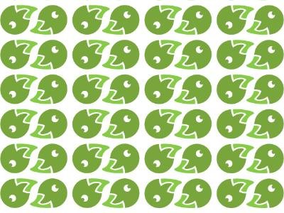
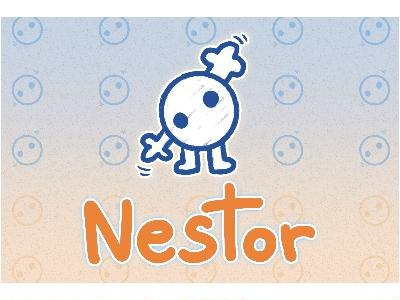
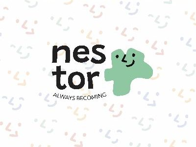
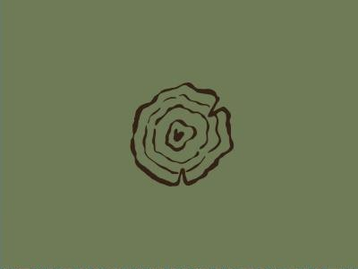
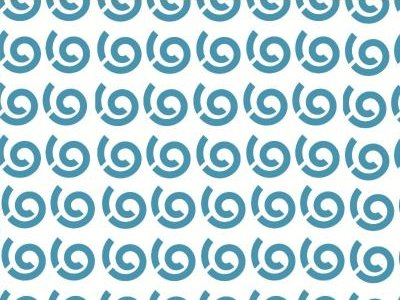

Tudo o que vive dentro do Markdown renderizado. Os mesmos tokens nos dois esquemas — troca em Tweaks para ver o slate.
Link normal: editor.p5js.org. Link em hover, marcado como um marcador: processing.org. Código em linha: random().
| Ferramenta | Tipo | Onde |
|---|---|---|
| p5.js | Editor online | editor.p5js.org |
| Processing | Alternativa desktop | processing.org |

4 MosqueteirosAndré Alves; Guilherme Gonçalves; Gonçalo Lucas; Leandro Arroio · 2025-26
NESTOR - Contador de HistóriasDeixa a Imaginação Fluir! · hover
Always BecomingBrinquedos com formas orgânicas BAMBeatriz, Mariana, Assunção Ver com as mãosAprende a conhecer o mundo com as mãos
Brincar é NaturalBrinquedos para todos Crazy TownConstruir a brincar
Cria sem pararBrinquedos de madeira feitos a partir do desperdício